BACnet Editor Workspace
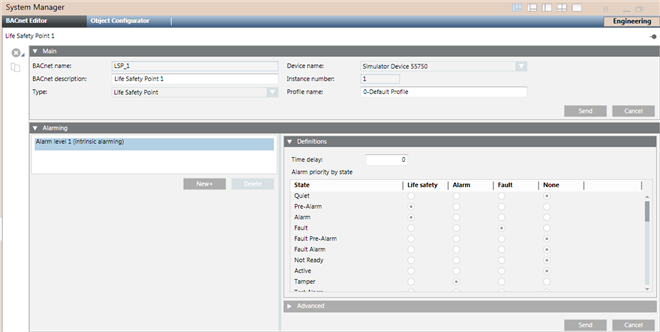
When selecting a BACnet object in the System Browser, the BACnet Object Editor displays the following sections in the Primary pane (the sections displayed will vary based on the selected object):
- Main (Object Properties): The object’s primary properties.
- Alarming (Intrinsic Alarming): If Alarm Level 1 (Intrinsic alarming) is selected, you can edit the object’s intrinsic alarming properties. Not all BACnet objects support intrinsic alarming.
- Alarming (Event Enrollment): Each object can have one or more event enrollment objects associated with it. However, each event enrollment object can only be associated with one BACnet object.
- Copy Alarms: Use this feature to copy the alarms from a selected (source) object to one or more target objects. This process creates new event enrollment objects for each target object, and overwrites the target object’s intrinsic alarm properties with the properties of the selected object.
- Recipient List (Notification Class): The properties for a Notification Class object. (This section is not shown in the screen above.)
- Life Safety Memberships: This view displays the memberships of the object selected in the System Browser.
- Structured View Subordinate List: This view provides a container to hold references to subordinate objects, which may include other Structured View objects.
- Trended Properties: Displays the properties that a Trend Log or Trend Log Multiple collects.
- Start/Stop: Use this section to specify starting and ending dates for trend log collection.
- Property: By default, any additional BACnet properties not displayed in any other sections of the BACnet Object Editor display in this section.
Depending on the type of object selected, the following icons are available:
Application Toolbar. | ||
Icon | Name | Description |
| Create New BACnet Object | Select a device or an existing notification class object and click this button to create a new notification class object. Applies only to Notification Class objects. |
| Save | Saves any changes made to the notification class object. Applies only to Notification class objects. |
| Save As | Select an existing notification class object and click this button to create a new object. You will be prompted to complete the Name and Description fields for the new notification class object. Its fields will be populated with default values. Applies only to Notification class objects. |
Delete | Delete the object selected in the System Browser. If an event enrollment object is selected, a message displays notifying you that deleting the event enrollment object also deletes its referenced BACnet object and other event enrollment objects associated with the referenced object. | |
Copy All | Copy all the event enrollment objects and/or the intrinsic alarm associated with the selected BACnet object to one or more BACnet objects. This creates new event enrollment objects for each target object, and overwrites the intrinsic alarm properties of the target objects with the intrinsic alarm properties of the selected object. | |


Alarming (Event Enrollment)
The fields that display in the Alarming section can vary depending on what you select in System Manager; a point that is referenced by one or more event enrollment objects, or an object that is an event enrollment object.
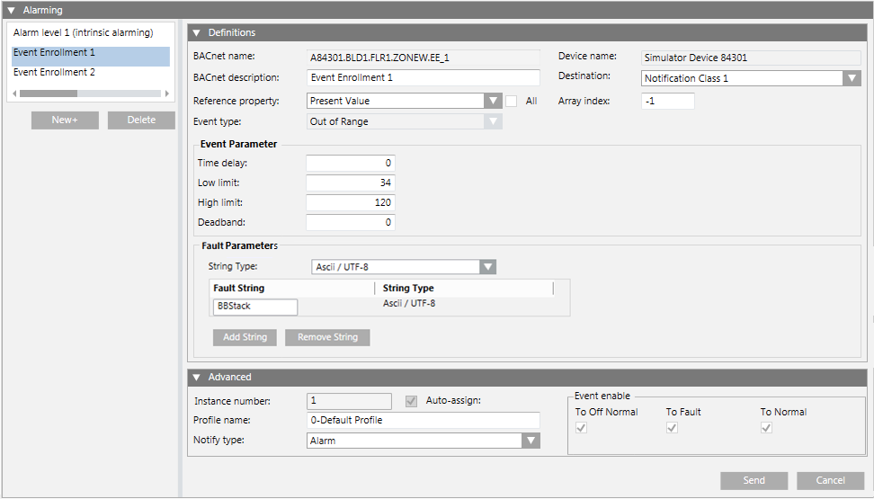
For points referenced by one or more event enrollment objects, the following fields are displayed when an event enrollment object is selected in the Alarming section:
Field/Button | Description |
New | Click this button to create an event enrollment object. The new object displays in the list with the default name EE_#_ monitored object ID where:
You can edit this name in the BACnet Name field of the Advanced section. |
Delete | Deletes the selected event enrollment object. |
Definitions | These fields calculate when an alarm should be issued. The fields default to the most common selections for the event enrollment object’s associated object. |
BACnet Name | The BACnet name that is unique within the device. The Desigo CC object name displays in the System Browser, and is edited in the Object Configurator. |
BACnet Description | The object’s BACnet description. |
Reference Property | The property of the associated object which is applied to a standard algorithm (selected in the Event Type field) to determine if a change report (alarm) should be generated. |
Event Type | The algorithm used with the property selected in Reference Property field. See Event Enrollment (Algorithmic Change Reporting) for more information. If desired, you can edit the Event Type regardless of whether the event enrollment object already exists at the device. |
Device Name | The Desigo CC name of the device where the event enrollment object resides. |
Destination (Notification Class) | Specify the destination (notification class) of the alarm from the drop-down field. |
Event Parameter | Displays the parameters for the selected event type. When a BACnet object is required for the parameter, you can drag the object from the System Browser to the BACnet Name field. |
Fault Parameters | For any BACnet device that supports it, this allows an event enrollment object to generate a fault event, instead of OffNormal, based on specified parameters. |
Advanced |
|
Object Type | The BACnet object type. |
Instance Number | The number which uniquely identifies the object within the device. Check the Auto-Assign box when creating a new event enrollment object to have the system assign this number. |
Profile Name | The object’s profile, which defines the set of properties, behavior, and/or requirements for a proprietary object, or for proprietary extensions to a standard object. |
Notify Type |
|
Event Enable | Specify the types of alarm events:
|
Send | Saves any changes you have made. |
Cancel | Discards any changes you have made. |
When an event enrollment object is selected, the fields displayed are identical to the points referenced by one or more event enrollments, except for the following differences:
- The Main expander displays the event enrollment object’s information, not the information of the point that the event enrollment object is monitoring.
- The Definitions and Advanced expanders in the Alarming expander do not duplicate information already displayed in the Main expander.
- The alarm list that normally displays on the left of Alarming expander is replaced by the Monitored Object expander.
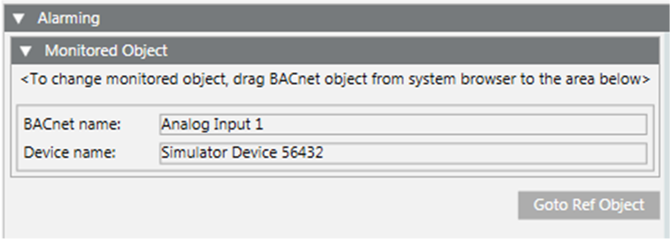
Field/Button | Description |
Monitored Object | To change the monitored object, drag the BACnet object from the System Browser to this section. The BACnet name and Device name for the object displays in the list. If you drag a new object into this section, the monitored object reference is replaced, and the Event Parameter information in the Definitions expander is replaced with the default type for the new object. NOTE: You cannot drag an event enrollment object or multiple instances of the same object into this section. |
Goto Ref Object | Use this button to navigate directly to the referenced point. |
Alarming (Intrinsic Alarming)
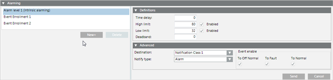
If the BACnet object supports intrinsic alarming, then Alarm Level 1 (Intrinsic Alarming) displays. Select it to edit the object’s intrinsic alarming properties.
Field/Button | Description |
New+ | A BACnet object only has one intrinsic alarm. Clicking the New button lets you create a new event enrollment object. Since you cannot delete an intrinsic alarm, the Delete button is unavailable. |
Definitions | This section displays the alarm properties. The fields displayed will vary depending on the BACnet object type selected in the System Browser. |
Advanced |
|
Destination | Specify the destination (notification class) of the alarm. |
Notify Type |
|
Event enable | Specify the types of alarm events:
|
Send | Saves any changes you have made. |
Cancel | Discards any changes you have made. |
Copy Alarms
This section displays when you click the Copy All button on the Application toolbar. It allows you to copy the event enrollment objects and the intrinsic alarm properties associated with a BACnet object (source object) to one or more BACnet objects (target objects). This process creates new event enrollment objects for each target object, and overwrites the target object’s intrinsic alarm properties with the properties of the selected object.
This feature has two tabs: Targets and Activity.
Targets Tab
This tab displays by default and lets you build the list of objects you want to copy the alarms to. You build the list by dragging the objects from the System Browser. This tab also lets you initiate the copy operation.
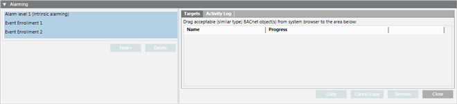
Field/Button | Description |
Drag acceptable (similar type) BACnet objects from System Browser to the area below | Select the objects in the System Browser you wish to copy alarming information to and drag them to this window. |
Name | The Desigo CC object name. |
Progress | Indicates the progress of the copy operation. |
Copy | Copies the event enrollment objects and the intrinsic alarm properties to the listed objects. The copy operation creates new event enrollment objects for each target object, and overwrites the intrinsic alarm properties of the target object with those of the copied object. |
Cancel Copy | Cancels the copy operation currently in progress. |
Remove | Select one or more objects in the list to remove them. |
Close | Closes the Copy All list. |
Activity Log
This tab provides status information of the latest copy procedure. This feature runs in the background, so you can begin a procedure and then work with other management station applications. The results of all copy operations display until the client management station is closed or the user logs off. Therefore, no archive of the copy operations is saved.
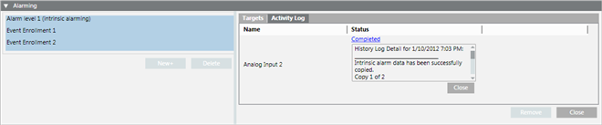
Field/Button | Description |
Name | The Desigo CC object name. |
Status | Displays the results of the copy operation for the listed object. Click the Status link to expand the entry (expanded entry shown in the example above). Click the Close button, immediately below it, to collapse the entry. |
Remove | Select one or more objects in the list to remove them. |
Close | Closes the Copy All list. |
Life Safety Memberships
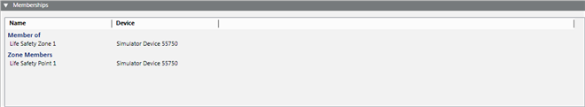
This read-only section displays the memberships of the object selected in the System Browser.
Column | Description |
Name | The selected object’s memberships:
|
Device | The name of the device where the object resides. |
Main (Object Properties)
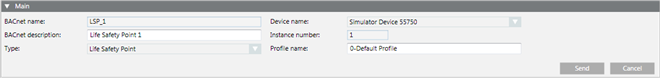
This section displays the common properties for the BACnet object selected in the System Browser. If a notification class object has been selected, then only the BACnet Name, BACnet Description and Device Name fields display. If an event enrollment object is selected in the System Browser, then the properties for the object associated with the event enrollment object display.
Field/Button | Description |
BACnet name | The name that is unique within the device. The Desigo CC object name is displayed in the System Browser, and is edited in the Object Configurator. You can only edit this field for a new object. |
BACnet description | The BACnet object’s description. |
Type | The BACnet object type. |
Device name | The Desigo CC name of the device where the object resides. |
Instance number | The number which uniquely identifies the object within the device. |
Profile name | The object’s profile, which defines the set of properties, behavior, and/or requirements for a proprietary object, or for proprietary extensions to a standard object. |
Send | Saves any changes you have made. For a notification class object, you must save the changes using the Save button on the toolbar. |
Cancel | Discards any changes you have made. |
Property
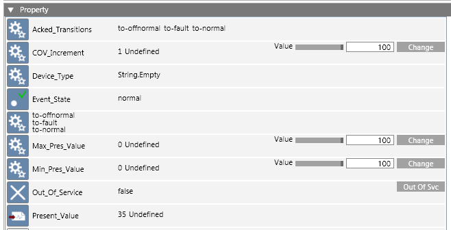
The Property section shows, by default, any additional BACnet properties not displayed in any other sections of this application. Properties that you can update have visible fields and buttons. Only properties with simple data types are displayed.
For detailed information regarding BACnet object properties, see ANSI/ASHRAE Standard 135-2008 (or later).
Recipient List (Notification Class)
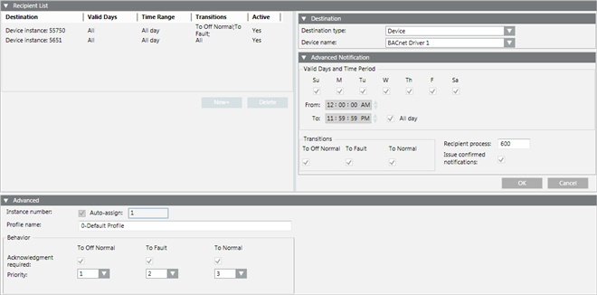
Field/Button | Description |
Recipient List | This section defines the notification class object’s recipient list (the list of devices or management stations receiving object alarms). Click New or select an existing destination to display the Destination and Advanced Notification sections. Use these sections to specify a device. To remove a destination from the list, select the destination and click Delete. |
Destination |
|
Destination type | Specify the device using one of the options from this drop-down list. Additional fields may be displayed depending on your selection:
|
Advanced Notification |
|
Valid Days and Time Period | Use these check boxes and fields to specify the days and time period when the device can receive notifications. Check the All day check box to receive notifications 24 hours a day. |
Transitions | Specify the transition states the device can receive:
|
Recipient process | Identifies an application process inside a BACnet device. |
Issue confirmed notifications | Check this box if the device sending the alarm requires a response from the device receiving the alarm. |
OK | Click this button to save the changes made to the device and continue editing the notification class object. You can create a new device or edit an existing device, or edit the object’s Advanced fields. NOTE: To save all changes made to the Recipient List and Advanced sections, you must click the Save button on the Application Toolbar. |
Cancel | Click this button to cancel any changes you have made. |
Advanced |
|
Instance number | The number which uniquely identifies the object within the device. Check the Auto-Assign box when creating a new notification class object to have the system assign this number. |
Profile name | The object’s profile, which defines the set of properties, behavior, and/or requirements for a proprietary object, or for proprietary extensions to a standard object. |
Acknowledgement required | Specify the types of alarm events which require acknowledgement:
|
Priority | Assign a priority level to each alarm event. |
Start/Stop (Trend Logs)
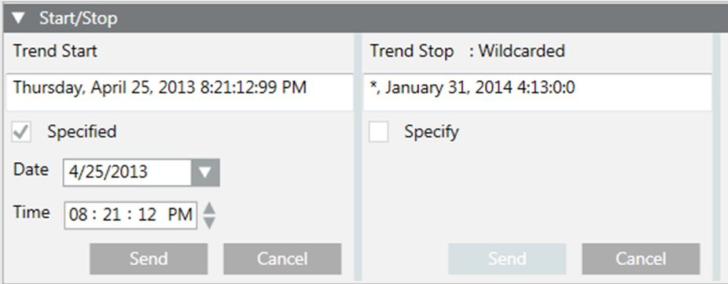
In the Trend Start and Trend Stop sections, the date strings initially display as they are defined in the device. If wildcards are present in any of the values, Wildcarded displays above the date string and the Date and Time fields are hidden.

NOTE:
In order to save any date or time changes that you make, you cannot combine wildcards with your entries. You can have either complete date and time values or all wildcards, but not a combination of both.
Field/Button | Description |
Trend Start, | Use the Trend Start and Trend Stop sections to specify starting and ending dates for trend log collection. Check the Specify box to display the Date and Time fields. |
Specify/Specified | If wildcards are present in the start or stop times, the Specify box is unchecked and the Date and Time fields are hidden. When you check Specify, its name changes to Specified and the Date and Time fields display. The default Trend Start time is the current date and time, and the default Trend Stop time is 24 hours from the current date and time. NOTE: Unchecking the Specified box replaces the date and time with all wildcards (*). |
Date | Allows you to select the start or stop date. |
Time | Allows you to select the start or stop time. |
Send | Saves any changes you have made. |
Cancel | Discards any changes you have made. |
Structured View Subordinate List
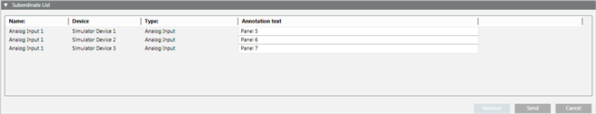
The Structured View object provides a container to hold references to subordinate objects, which may include other Structured View objects. This allows multilevel hierarchies to be created, which can convey a structure or organization such as a geographical distribution or application organization.
Subordinate objects may reside in the same device as the Structured View object or in other devices on the network. You build a structured view subordinate list by dragging the objects from the System Browser to this section.
Field/Button | Description |
Name | Name of the object included in this list. |
Device | The device where the object resides. |
Type | The BACnet object type. |
Annotation text | Optional text that can be entered to describe the list member. |
Remove | Select one or more objects in the list and click this button to remove it. |
Send | Click this button to save any changes you have made. |
Cancel | Click this button to discard any changes you have made. |
Trended Properties
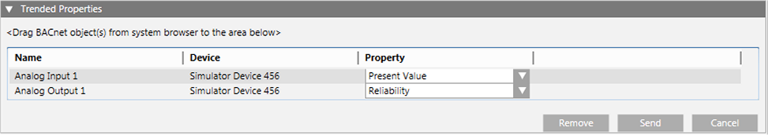
This section displays the properties that a Trend Log or Trend Log Multiple collects. While only one property displays for Trend Logs, a Trend Log Multiple can have any number of trended properties.
When you drag single or multiple objects into this section, the default property of the object displays in the Property field. To specify a different property for collection, click and select it from the drop-down menu.
With Trend Log Multiple, you can add the same object more than once to collect different properties. For example, you can add Analog Input 1 twice, specifying Present Value in the first instance and Status Flags in the second.
Field/Button | Description |
Name | The object’s name. |
Device | The device’s name. |
Property | Lists all available properties for the object. |
Remove | Select one or more objects in the list and click this button to remove them. |
Send | Click this button to save any changes you have made. |
Cancel | Click this button to discard any changes you have made. |